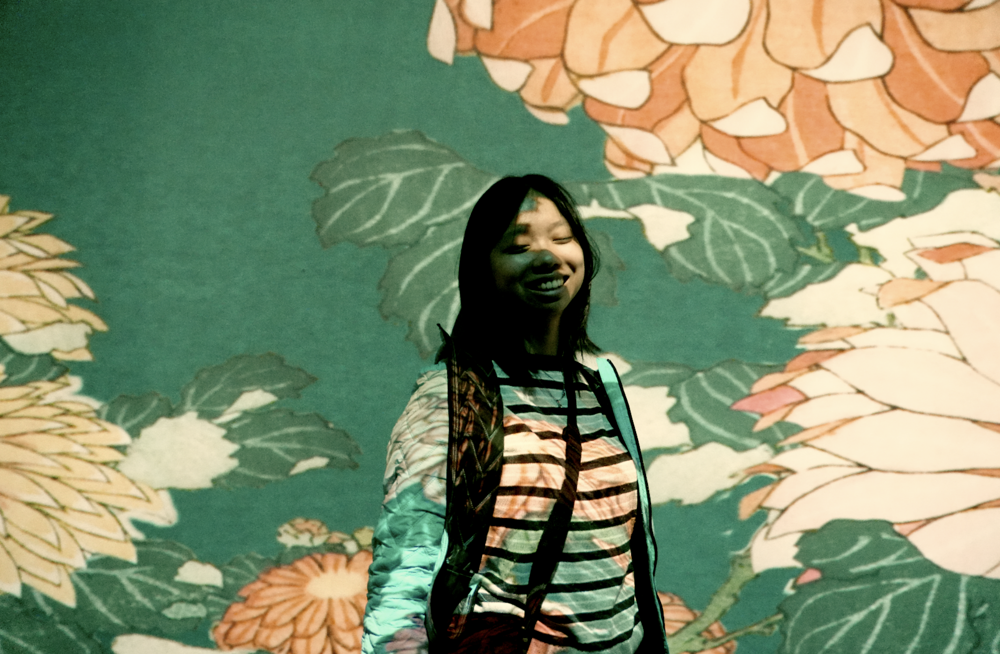

about me
Hi! I’m Jasmine. I’m a second-year film studies + SASAH + Ivey AEO student at Western University. I’m a video journalist, filmmaker, photographer, designer, writer—basically… I’m a lot of things. I spent all of high-school in the tech/startup space, and now I’m in the humanities space. I’m very interested in the intersection of these two worlds. I’m currently directing a short-film, working as a video journalist at the Western Gazette, & exploring the startup space again, on my own terms.